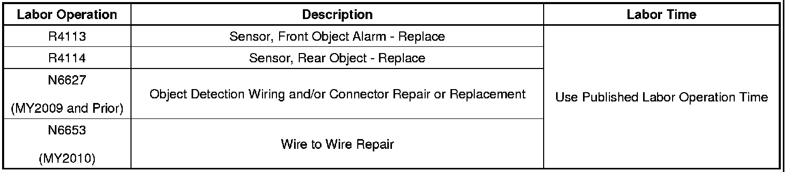

Park Assist System - Inoperative/Lamp ON/DTC's Set
TECHNICALBulletin No.: 08-08-127-001B
Date: June 10, 2010
Subject: Park Assist System Inoperative, Service Park Assist Message Displayed on Driver Information Center (DIC), DTC B1E3A and/or B0954, B0955, B0956, B0957, B0958, B0959, B0960, B0961 Set (Replace Appropriate Object Sensor or Repair Harness)
Models:
2006-2008 Buick Lucerne
2008-2009 Buick Enclave
2006-2008 Cadillac DTS
2007-2009 Cadillac Escalade, SRX
2008-2010 Cadillac CTS
2007-2009 Chevrolet Avalanche, Silverado, Suburban, Tahoe
2009 Chevrolet Traverse
2007-2009 GMC Acadia, Sierra, Yukon, Yukon XL
2007-2009 Saturn OUTLOOK
Equipped with Parking Assist (RPO UD7 or UFR)
Supercede:
This bulletin is being revised to clarify the text in the Condition, Cause and Correction sections and update the Warranty Information. Please discard Corporate Bulletin Number 08-08-127-001A (Section 08 - Body and Accessories).
Condition
- Some customers may comment on a Service Park Assist message being displayed on the driver information center (DIC).
- The technician may observe with a scan tool DTC B1E3A and/or B0954, B0955, B0956, B0957, B0958, B0959, B0960, B0961 set as Current or in History.
Cause
- This condition may be caused by a malfunctioning object sensor or a circuit fault on the 8 volt reference circuit.
Note
The 8 volt reference circuit serves all of the object sensors in parallel. A fault anywhere on the circuit or in any single sensor will affect all of the sensors.
- When a single sensor malfunctions, the shared 8 volt reference circuit may be compromised, resulting in a DTC for each sensor.
Correction
Important
DO NOT replace all of the object sensors and/or the object alarm module.
If normal diagnosis does not reveal any concerns with the park assist system, perform the following diagnostic procedure:
1. Turn OFF the ignition.
Note
Depending on the model year of the vehicle the park assist system sensors are referred to as: object sensor or object alarm sensor.
2. Disconnect the harness connector at each of the object sensors. For the locations of the object sensors, refer to Master Electrical Component List in SI.
3. Turn ON the ignition, with the engine OFF.
Important
With all of the object sensor harness connectors disconnected, multiple sensor DTCs will set and will not clear. Ignore these DTCs for now.
4. Clear any DTCs that may be present.
5. Verify that DTC B1E3A does not reset as Current.
Important
Ensure each leg of the circuit is tested since the 8 volt reference circuit feeds all the sensors in parallel.
• If DTC B1E3A does set, test the 8 volt reference circuit for a short to voltage, short to ground or an open/high resistance. Repair the circuit as necessary. Depending on the model year of the vehicle, refer to Body > Wiring Systems > Diagnostic Information and Procedures > Wiring Repairs OR Power and Signal Distribution > Wiring Systems and Power Management > Diagnostic Information and Procedures > Wiring Repairs in SI.
• If DTC B1E3A does not set proceed to Step 6.
6. Install each object sensor harness connector one at a time, checking for DTCs immediately after each sensor is connected. Verify DTC B1E3A does not set as Current.
• If DTC B1E3A does set, replace the object sensor that was connected immediately before the DTC set.
7. Perform the diagnostic repair verification after completing the diagnostic procedure. Refer to Diagnostic Repair Verification in SI.
Parts Information
Warranty Information

For vehicles repaired under warranty, use the table.

Disclaimer